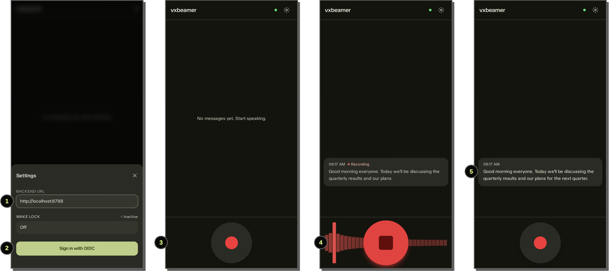

Getting started¶
Usage¶

Deploy the backend (see Deployment, below)
Open
/pairon it, sign in with OIDC, and open the pairing link in the client (see Pairing a client)To start transcribing, click the start recording button
To stop, click the same button
Click on the transcript bubble to copy, swipe left to delete, swipe right to beam to custom integrations
Deployment¶
A full deployment consists of three parts:
OIDC provider — an OIDC-compatible identity provider such as Authentik (see Authentication).
Backend — a self-hosted server you run yourself (see below).
Frontend — the web application, available at vxbeamer.vercel.app. This hosted instance is provided as-is and connects to whichever backend you pair it with: it learns the backend’s address from the pairing link, so there is no URL to type. Only the frontend is hosted; you must run your own backend.
Backend¶
The backend is distributed as a Docker image.
services:
backend:
image: ghcr.io/dtinth/vxbeamer:latest
pull_policy: always
restart: unless-stopped
expose:
- 8787
environment:
- DASHSCOPE_API_KEY
- GROQ_API_KEY
- BYTEPLUS_API_KEY
- OPENAI_API_KEY
- XAI_API_KEY
- ELEVENLABS_API_KEY
- IAPP_API_KEY
- OPENROUTER_API_KEY
- META_API_KEY
- PAXA_API_KEY
- GEMINI_API_KEY
- AI_GATEWAY_API_KEY
- OIDC_DISCOVERY_URL
- OIDC_CLIENT_ID
- OIDC_SECRET
- API_KEYS
The environment list above is only the common subset: every variable is listed on the Configuration page.